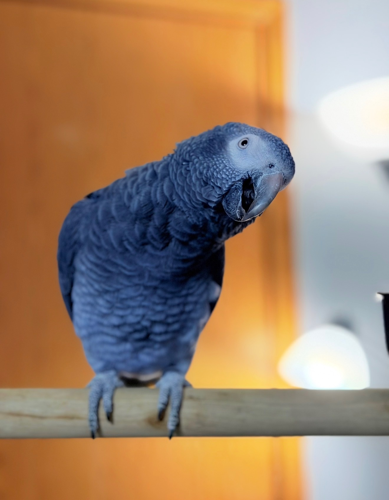

What are parrots?
Parrots are intelligent birds known for their ability to mimic sounds and their colorful feathers. There are many species of parrots, each with their own unique characteristics. They are native to tropical and subtropical regions.
Types of Parrots
There are hundreds of different species of parrots. Some of the most popular parrots in the pet trade include:
- Cockatiels
- Amazons
- Budgerigars
- African Greys
- Macaws
- Lovebirds
- Conures

Parrot Enrichment
Parrots are so intelligent that they require enrichment to keep them mentally stimulated. Foraging toys, puzzles, interactions with their owners or other birds can help meet these needs.
- Provide a variety of toys
- Rotate toys regularly
- Spend time interacting with your parrot
- Encourage foraging behavior